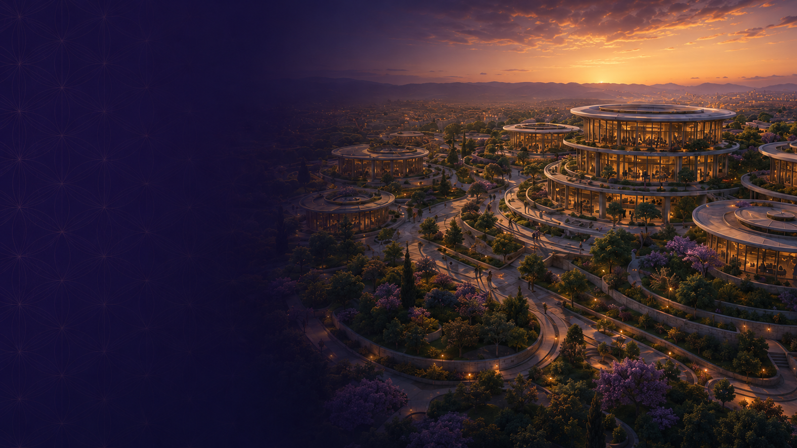
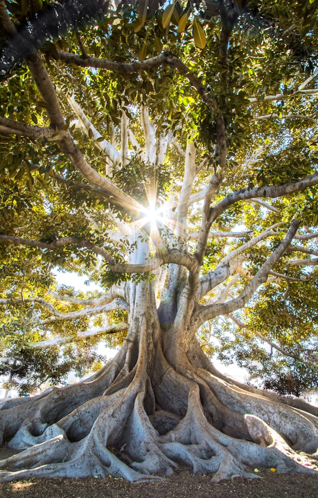
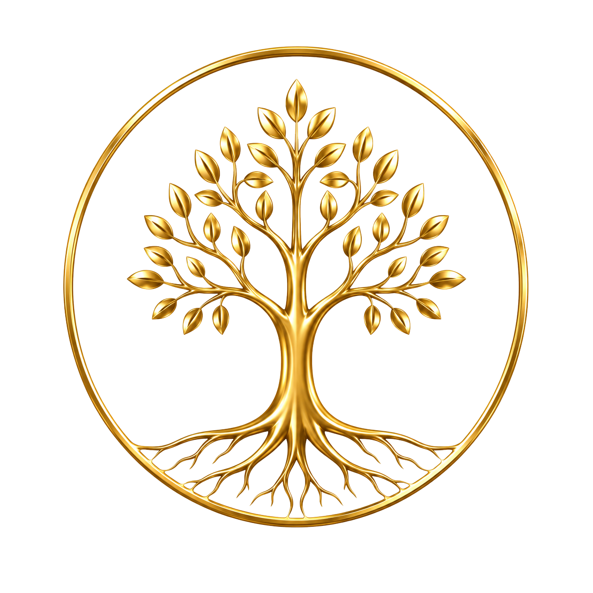
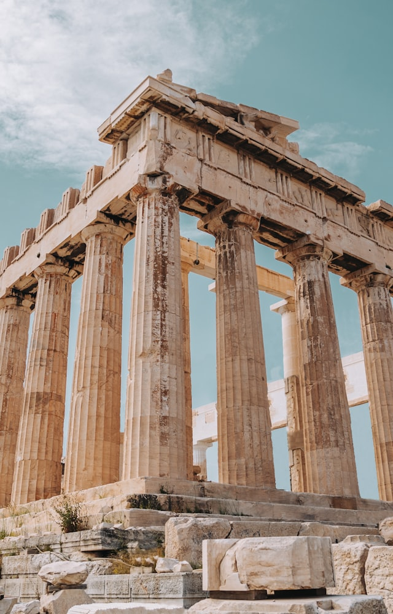
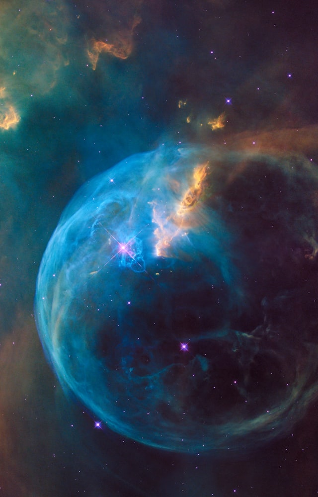

01Learn
Courses and pathways for personal and professional growth.

The Jerusalem Unity Center
A Future Gathering Place for Humanity
The Jerusalem Unity Center campus will be a living expression of learning, reflection, creativity, and service—designed to inspire generations to come together for a shared future.
“In that Day, his name will be One and he will be One”
Zechariah 14:9

A center for welcoming the nations in Jerusalem — a global gathering place for learning, dialogue, spiritual development, cultural exchange, and human flourishing.
The Jerusalem Unity Center exists to hold a question that belongs to all people: what allows a human being, and a whole society, to flourish? The answer is pursued here through study and research, through the meeting of traditions, and through the practice of ethical leadership — in a place built for people to arrive as strangers and leave as neighbours.
The campus is conceived as a single continuous landscape rather than a set of separate buildings. Terraced pavilions step down the hillside above the city, gathered around gardens, courtyards, and walking paths, so that movement between learning, reflection, and conversation is unbroken. Every part of the plan serves one intention: to bring people together around our shared humanity.
The light within illuminates the path for all.
Jerusalem Unity Center
The plan organises the campus around seven functions. Each is a place as well as a programme — a room, a garden, a hall, a chapter house — and together they form the daily life of the Center.
Courses and pathways for personal and professional growth.
Timeless wisdom, modern research, global perspectives.
Dialogue circles, study groups, lifelong connections.
Conferences, workshops, retreats, and global gatherings.
Centers of excellence advancing knowledge and understanding.
Interdisciplinary research for the flourishing of humanity.
Local communities united in purpose across the world.
Six centers of excellence give the Center its intellectual structure. Each holds its own faculty, research, and public programme, and each opens onto the others — the questions they carry are not separable.
Explore the nature and development of awareness.


Cultivate wisdom, purpose, and inner transformation.
Discover what enables individuals and societies to thrive.

Develop integrity, ethical leadership, and responsibility.
Build bridges across cultures, faiths, and perspectives.

Bridge scientific inquiry and human experience.
Whatever brings a visitor to the Center — a course, a conference, a season of study, or a single afternoon in the gardens — the journey runs along five pathways.
Exploring awareness, perception, meaning, and human potential.
Cultivating inner growth, wisdom, purpose, and connection.
Supporting well-being, resilience, creativity, and fulfillment.
Building bridges across cultures, faiths, disciplines, and perspectives.
Celebrating knowledge, traditions, arts, and stories that enrich humanity.
The Center is being built in the order in which it can serve: community first, then scholarship, then the campus that houses them, then the chapters that carry the work into the nations.
Establishing the founding community and its membership, the first dialogue circles and study groups, and a programme of learning delivered in Jerusalem and online.
Opening the six institutes as teaching and research bodies — faculty, fellowships, published research, and the first international conferences and leadership forums.
Building the gathering place itself: the terraced pavilions, the library and archive, the assembly hall, the study rooms, and the gardens and courtyards that join them together.
Extending the work outward through global chapters, exchange and ambassador programmes, and an annual gathering that welcomes the nations to Jerusalem.
Indicative sequencing — phases overlap as resources and partnerships allow.
The Seventy Nations (R.A.) Jerusalem is a registered Israeli nonprofit association that partners with its sister organization, The Jerusalem Unity Center USA — a 501(c) nonprofit foundation that allows its donors to take tax deductions for contributions of cash, goods, and other assets. Your support turns this plan into a place.
← Back to the Jerusalem Unity Center